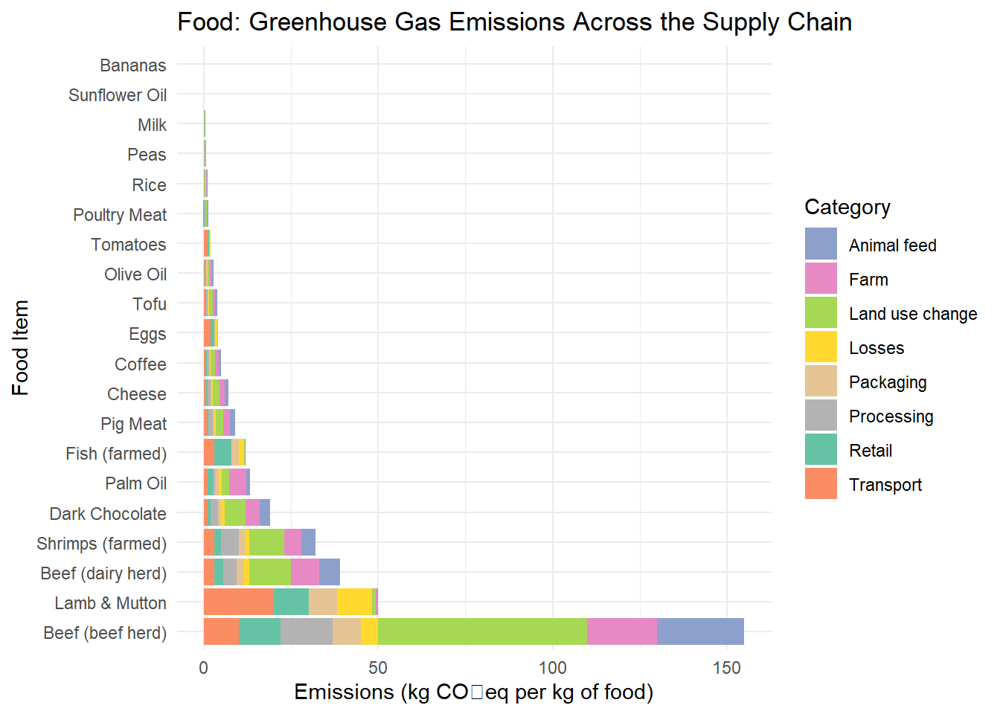

library(ggplot2)
# Data
food_items <- c("Beef (beef herd)", "Dark Chocolate", "Lamb & Mutton", "Beef (dairy herd)", "Coffee",
"Shrimps (farmed)", "Cheese", "Fish (farmed)", "Pig Meat", "Poultry Meat", "Palm Oil",
"Olive Oil", "Eggs", "Rice", "Sunflower Oil", "Tofu", "Milk", "Tomatoes", "Peas", "Bananas")
total_emissions <- c(99, 47, 40, 33, 29, 27, 24, 14, 12, 9.9, 7.3, 5.7, 4.7, 4.5, 3.6, 3.2, 3.2, 2.1, 0.98, 0.89)
categories <- c("Land use change", "Farm", "Animal feed", "Processing", "Transport", "Retail", "Packaging", "Losses")
# Example breakdown of emissions (these values should be adjusted based on actual data)
land_use <- c(60, 20, 25, 15, 10, 12, 8, 5, 6, 4, 3, 2, 1, 1, 1, 1, 1, 0.5, 0.3, 0.2)
farm <- c(20, 10, 8, 10, 12, 8, 6, 4, 3, 2.5, 2, 1.5, 1.2, 1, 0.8, 0.6, 0.5, 0.4, 0.3, 0.2)
animal_feed <- c(10, 5, 4, 5, 3, 2, 2, 1, 2, 1.5, 1, 0.8, 0.6, 0.5, 0.4, 0.3, 0.2, 0.1, 0.05, 0.02)
processing <- c(3, 5, 2, 1.5, 2, 2, 1.5, 1.2, 0.8, 0.6, 0.5, 0.4, 0.3, 0.2, 0.2, 0.15, 0.12, 0.1, 0.08, 0.05)
transport <- c(2, 5, 1, 0.8, 1, 1.5, 1, 0.9, 0.7, 0.6, 0.4, 0.3, 0.25, 0.2, 0.18, 0.15, 0.1, 0.08, 0.05, 0.03)
retail <- c(2, 1, 0.5, 0.4, 0.3, 0.2, 0.2, 0.1, 0.1, 0.08, 0.05, 0.04, 0.03, 0.02, 0.015, 0.01, 0.008, 0.006, 0.004, 0.002)
packaging <- c(1, 0.8, 0.6, 0.5, 0.4, 0.3, 0.2, 0.1, 0.1, 0.08, 0.05, 0.04, 0.03, 0.02, 0.015, 0.01, 0.008, 0.006, 0.004, 0.002)
losses <- c(1, 0.5, 0.3, 0.2, 0.2, 0.15, 0.1, 0.08, 0.06, 0.05, 0.03, 0.025, 0.02, 0.015, 0.012, 0.01, 0.008, 0.006, 0.004, 0.002)
# Create a data frame
df <- data.frame(Food = rep(food_items, each = 8),
Category = rep(categories, times = length(food_items)),
Emissions = c(land_use, farm, animal_feed, processing, transport, retail, packaging, losses))
# Plot the data
ggplot(df, aes(x = Emissions, y = reorder(Food, -Emissions), fill = Category)) +
geom_bar(stat = "identity") +
labs(title = "Food: Greenhouse Gas Emissions Across the Supply Chain",
x = "Emissions (kg CO₂eq per kg of food)",
y = "Food Item") +
scale_fill_manual(values = c("#8DA0CB", "#E78AC3", "#A6D854", "#FFD92F", "#E5C494", "#B3B3B3", "#66C2A5", "#FC8D62")) +
theme_minimal()